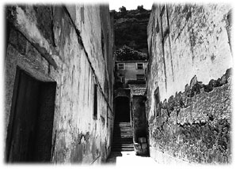

|
エル・トーレの二日目。
タリアと歩くコスモスの丘にはその名にふさわしい景色があった。
見渡す限りの一面の花々。メキシカンコスモスの大群生である。
スワロロロロロロロロローッと緩やかな大波。
スワロロロロロロロロローッと渦巻く小波。
スワロロロロロロロロローッとさらなる大波。
風の腕が撫でる度に草原の向こうからうねりが押し寄せてきた。コスモスの凹凸はあちらこちらでよじれ、繋がり、弾け合い、丘陵全体を秋の海のように揺らすのだった。うぶな割に濃厚な香りも潮の飛沫のようにやってきた。花々が風に誘惑を乗せているのだ。たくさんの虫や蝶が螺旋を描いて飛んでいる。ハチドリが舞っている。
モノトーンだとはいえ、それは見事な生の風景であった。色が失われていてもこの丘はしっかりと前を向いている。そう感ぜずにはいられなかった。無数の命が在るべき日々を待ちわびて懸命に背筋を伸ばしているのだ。花だけでも色を取り戻すことができればどれだけの鮮やかさを見せつけることであろう。
一際甘い香りも漂う。白い群生にちらほらと交わる黒ずんだ花々は私が初めて見るチョコレートコスモスという希少種かもしれなかった。日本では栽培種も含め、滅多に見られないメキシカンコスモスだ。カルロスの話によればその花びらは上品な焦茶で、花芯からはミルクチョコのような芳香を発するらしい。モーレソースの料理を作った時はテーブルにチョコレートコスモスを飾りたいんだ、理想だけどね、と彼はよく言っていた。
腰を落として花に顔を近付ける。そっと匂いを嗅いでみる。やはりそうだ。チョコレートの銀紙を開けた時のような甘くて香ばしいカカオの匂いを発している。野生種のコスモスまでチョコ。メキシコは本当にチョコレートの国なのだ。ボラボラはあくまでも疑っている様子だったが、これまで経てきたことを考えればやはり宝のひとつにチョコレートを入れたくなる。
「初めて見たよ。チョコレートコスモス」
「お腹がすいている時にはその花の香りは辛いんですよ」
丘陵のくねり道をゆっくりと登りながら、タリアははにかんで笑ってみせた。彼女は朝早く起きてこしらえたというトルティーヤの包みを右手に持ち、左手ではコスモスの花々を撫でていた。花びらに触れる彼女を見ていると、その指先が昨夜私の手に添えられたことが何とも新鮮に感じられた。下膨れであろうが、目のまわりがあやふやであろうが、タリアはまだ二十代前半の未婚の女性である。若さが葉の上の雫のようにまぶしい。一方の私は派手さに欠ける人生を愚直に歩みつつ、力づくの平凡からも転がり落ちてしまった四十二歳厄年の東洋人薄ら頭である。肉体的な老いを感じたことは一度もないが、砂漠化が進行しつつある前頭部はじきにそれがやってくることを伝えている。社会の中枢ではまだまだ若いと言われる年齢ではあっても、生き物としての若さはすでに過ぎている。見た目はもはや二十代、三十代の頃の私ではないのだ。幻のように現れた蛇のうろこに映っていた自分の顔。あんなにやつれ、くたびれ切った顔が自分のものであるとは未だに信じ難い。まるで暗い森に放置されたままの椎茸のホタ木である。学生の頃の私が今の私を見れば情け容赦なくおっさんという言葉を思い浮かべたに違いない。そんな私にタリアは指先を重ねてくれたのだ。この娘のためにもやれることはすべてやってみようという気持ちになる。
「タリア。フォレノさんについてもう少し教えてくれないかい」
タリアは草を分けながら道を先導してくれているので、私よりも前を進んでいる。
「フォレノさんはまだ五十代だったと言っていたね。正確には幾つだったかわかるかい？」
こちらを振り返りながら彼女は胸元で声を曇らせた。
「うーん・・・よくわからないんです。個人的なことは聞いたことがないから。でも、フォレノさんはいつだったか、大きな戦争が終わった後で生まれたんだって自分で言っていました」
「大きな戦争って、第二次世界大戦？」
「そう。あの国は戦争ばかりしているから、戦争と言っただけじゃどの戦争かわからないですよね。フォレノさんはもともとメキシコ人じゃないんですよ。スペイン系のアメリカ人。若い時に徴兵を拒否してずっと放浪していて、それでこのオアハカに辿り着いた時にアトリエを建てることを決めたらしいんです」
「珍しいなあ。アメリカからの入植者ってことか」
「けっこういるんですよ、メキシコに流れてくるアメリカ人。みんなすねに傷を持つ人ばかりですけど」
タリアの言葉通りなら、フォレノさんは世界的にベビーブーマーと呼ばれた世代に該当する。日本で言うところの団塊の世代である。少なくとも私より十年は先に生まれた人々で、人数が突出していることを頼りに良くも悪くもエネルギッシュに振る舞ってきた元祖若者たちである。六十年代にはヒッピーやフラワーチルドレンと呼ばれた層さえも形成し、それまでの文化や道徳を徹底的に叩き壊そうとした彼ら。能力とは関係のない部分で時代に選ばれ、勝手につけあがってしまった感のある彼らに対し、宮川のじっちゃんなどはあからさまにののしりの言葉を吐いていた。しかし私は団塊の世代の軽薄さや偽善性を嫌いにはなれず、むしろ出来の悪い兄に対する憧れのような気持ちすら抱いていた。事件性が希薄だった学生時代にはできることなら彼らの世代に生まれたかったと思ったものだ。若い人たちから見れば同じようなおっさんでも、本物のおっさんとできたてのおっさんの間にある十数年の開きは大きい。遅れて生まれてきた私たちにはデモ隊もゲバ棒も機動隊もなかった。団交も騒乱もなかった。ロックもフォークも既に死んでいた。彼らが自らつかんだと勘違いしているそれらの降って湧いた幸運は私たちの時代にはすべて消え去っていたのだ。それはひどく空虚な季節だった。音楽や演劇やスポーツに身を費やす者もいたが、根本的な部分で私たちは今を生きているという実感に欠けていたような気がする。ベビーブーマーのように世代という言葉を自分たちのために獲得し、自分たちが主流になりながら世の中を再構築していけたら、少なくともその勘違いができたら、それはどれだけの快感であろう。若者という言葉は彼らが若者の時代にもっとも輝き、もっとも力を持ち、彼らがいたからこそ具体化したとも言えるのだ。私が背広を着ずに包丁を握る人生を選んでしまったのは、世代的には与えられなかった生きていく実感を個人として獲得しようとしたせいかもしれない。フォレノさんも母国を捨ててこんな場所に一人で住んでいたということは、そういった自由謳歌組の一人だったのであろうか。私たちのようなトピック薄き世代から見れば、ちょっとした嫉妬の対象である。もっとも現代では、自殺者が一番多い層として団塊の世代を見る方法もあるのだから、彼らに対する私のものの感じ方は一面的に過ぎるのかもしれない。一番輝いていた世代だけにその挫折度合いもきっと大きいのだ。
「フォレノさんは長髪を後ろで束ねているような人だった？ よくありがちな、ほら、若い頃はヒッピーだとか、フラワーチルドレンだとか呼ばれたような」
「フォレノさんは頭を短く刈っていたし・・・それに私、フォレノさんの昔のことはよくわかりません。いつも同じ髪型に同じ服装のフォレノさんしか覚えていないんです。だけどもし、フラワーチルドレンという呼び方が今でも通用するのなら、それはフォレノさんにぴったりです。だって、わざわざあんなところにアトリエを作ったんですもの」
タリアが指差したのは丘の稜線がもっとも高くなっているところだった。風通しがいいのだろう。コスモスの群生が堤防にぶつかる波のようにそこだけ激しく揺れている。そして花の波濤のど真ん中に、寸法の合わない板ばかりを無理やり張り合わせて作ったような、ほとんど物置き小屋にしか見えない平家建てのみすぼらしいアトリエがあった。
「花の渦の中で暮らしていたんだ・・・」
「そうなの。コスモスの季節に限らず、ここはありとあらゆる花が咲く場所だから」
タリアは自慢げに周囲を見回しながらも、村への愛着と不安がごちゃ混ぜになった複雑な表情を見せた。希少なチョコレートコスモスまで含め、たしかにたくさんの花々が咲く丘陵を私たちは歩いている。アメリカ人の放浪者が放浪を捨て、定住したくなる桃源郷がこのエル・トーレの村にはあるのだ。美しい衣装が伝統的に生まれるのは、絶えることのない彩りの息吹がこの村にあったからであろう。ここが本来の姿であればタリアは丘陵を登りながら胸を張ったに違いない。世界で最高の場所、エル・トーレにようこそと。しかし村から鮮やかさが消えた今、何を頼りに生きていけばいいのかわからなくなってしまったのもタリアの現実である。色が消えたのは村だけではない。その摩訶不思議な現象はタリアの天性の仕事である衣装作りからも大切な才覚を奪ってしまったのだ。そして私自身まだ一日しかこの村にいないというのに、見えているはずの料理の仕上がりを見誤るというミスを侵してしまった。料理を作る上での出来不出来など一般の人にとってはどうでもいいことかもしれないが、それは私にとっては違う。原因のわからない味の揺らぎは料理で生きることを誓った人間にとっては致命的な欠陥なのである。もしこの揺らぎが継続したらと考えるだけで底知れぬ闇に落ちていくような幻惑を覚える。
もちろんそのような意味ではタリアの闇もそれだけ、いや、もっともっとずっとずっと深いはずだった。色の揺らぎに失望を覚えながら衣装を作ることと、味の揺らぎの原因がわからないまま料理を作ることは地獄の入り口としては同じ酷のはずである。しかし彼女は三ヶ月にもわたってその責め苦を受け続け、養う家族を背負いながらすべての仕事を失ってしまったのだ。そうなってしまうと彼女の抱えている闇の深さはどう頑張ったところで彼女本人にしかわからない。ものを作る人間としてできることは、肩をすっかり落としてしまった彼女の気持ちを推し量り、それでも諦めずに解決策を探っていこうと励ます程度のことでしかない。実を結ばぬ努力を肯定し、そばにいてあげること。それしかできないのだ。仕事がなくなったのだから衣装作りそのものを辞めてしまえば、などとは口が裂けても言えないし、言う気もない。それはタリアに、タリアであることを辞めてしまえば、というのに等しいからだ。
自殺の理由を類推して人はよく、「そんなことで死ななくても良かったのに」と言う。その言葉はその他大勢には的を得ているようで、当の本人にしてみれば実はとんでもなくはずれていたりする。私は自分の経験から今はそれがよくわかる。他人にとっては取るに足らないことでも、その些細から育まれる大きな影が精神を破綻させてしまうことはあるのだ。なぜなら個人と世界との間で芽生えた苦しみは、それぞれの胸の中でふくらみながら、あくまでも個人の持ち物として肉体への癒着を始めるからである。しかもそのサイズを測るための客観的な物差しはない。苦しみを図る尺度はすべて主観なのである。鈴木さんの苦悩は基本的に鈴木さんにしかわからない。山口さんの涙の理由は山口さんにしか理解できない。ロドリゲスの慟哭の深さはロドリゲス以外には掌握できない。それがわかっていながら私は考える。
フォレノさんという人はなぜ自ら消えることを選んだのだろう。
そこにはどういった主観の叫びがあったのだろうか。
消えなければいけない運命。
消えたいと思うほどの心身の痛み。
それともタリアと同じく、生きていく上で不可欠だと思われた能力に何らかの異変が起きたのだろうか。能力の衰退による絶望は作家や画家の自殺の理由として多く見られることだ。五十代半ばでその苦しみを背負ったとしても何ら不思議はない。極めて若い内に才能が枯渇すると言われている数学界では、二十代で首をくくってしまった天才が幾らでもいる。
小屋を見据えながら勾配を登っていると、フォレノさんの自殺に対する疑問がそうやって幾つも頭をよぎった。もともと私はフォレノさんという人物を昨日まで知らなかったのだ。どんな声でどんなふうに話すのか、どんな顔をしているのかすらわからない。しかももうこの世にはいない人である。疑問だらけになるのは当たり前だった。
「フォレノさん、何で死んじゃったんだろうね。誰かその理由を知っている人はいないのかな」
タリアは揺れるコスモスの中を進みながら、さあ、と首を横にひねる。
「友だちとか、親しい人とかいなかったの？」
「特に親しい人というのはいなかったように思います」
「そんな馬鹿な。だって、みんなから慕われていたんでしょう」
「誰にでもにこやかで、でも、誰にでも距離を置く人だったのかもしれません」
それじゃ、選挙運動中の政治家みたいじゃないかと言おうとした時、私の爪先がカツン、と硬いものに触れた。つまずきそうになったので何だろうと思い見てみれば、カナダやアメリカで大量に売られている「化学的シニカル」という清涼飲料水のガラス瓶であった。三段タヌキ腹デザインが特徴的なので一目でわかった。数歩も行かないことろにまた別のガラス瓶が転がっており、割れた破片も草間にかいま見えた。
「危ないなあ・・・こんなところに瓶を捨てて」
「そうなんです。フォレノさんはとてもいい人だったんだけれど、こういうところがあって」
「これはフォレノさんが捨てたの？」
「はい。たぶん彼です。ちょっと信じられないんですけど、私や弟が小さい頃に絵を教わっていたフォレノさんと、最近のフォレノさんは何だか違う人みたいで」
丘を登っている最中とあってタリアは息が上がり、言葉は途切れがちである。
「意外だなあ、絵描きがこういうことをするなんて」
コスモスの群生の中に投げ捨てられているガラス瓶。ただそれだけのことで、フォレノさんのイメージがより一層つかみにくくなってしまった。花を愛して丘陵にアトリエまで作った人が、花に向かって瓶を投げ付けるような行為をためらいなくできてしまうものなのだろうか。
「フォレノさん、絵を描き出すと夢中になってしまうみたいで、食べるものも食べないというか・・・いつも、バスターミナルのハンバーガーショップに現れて、一度に四十個も五十個も買っていくんです。冷凍庫に入れておくんだと言っていました。ついでにこの飲料水も大量に注文していたようです。見かねた村人がトマトやジャガイモを持っていくこともあったんですが、そのまま腐らせてしまって。食べるものにはあまり興味がなかったみたい。それで・・・」
「それで？」
「たぶんフォレノさんの機嫌が悪い時だと思うんですけど、私、見たことがあるんです。あの小屋の窓を開けて、外に瓶を投げていました。ものすごい形相で、何だか意味不明のことを怒鳴りちらしながら」
「タリア・・・フォレノさんは本当に君が言うような、つまり、いい人だったのかい？ そもそもいい人なんて世の中に存在するんだろうか」
「それはそうですけど・・・でも、誰だって機嫌が悪い時ぐらいは」
フォレノさんについて少しでも悪い印象を持ったら、私も御機嫌斜めになりますよ、とタリアは宣言しているようだった。私は口をつぐむ。しかし小屋が近付くにつれて、コスモスの群生に散乱している瓶やゴミの数は増える一方となった。化学的シニカルの三段タヌキ腹ガラス瓶に混じって、ハンバーガーやフライドポテトの包み紙が腐り溶けの状態で茎に絡み付いている。花がすがすがしいだけに醜悪な感じだった。まるで私が暮らしていたブルックリンの街路樹である。プロジェクトと呼ばれる高層住宅に住んでいる住人たちは窓から平気でゴミを投げ捨てた。歩道に落ちたゴミはニューヨーク市の清掃車が片付けていくものの、木の枝に絡んだポリエステルの袋や新聞紙、むちゃくちゃに引き出されたビデオテープなどはそのまま状態で放置されていた。七夕の飾りのようにゴミを引っ掛けた街路樹を見ながらそれでも平然とゴミを投げ続ける住民。同情的なことを言うならば、たしかに彼らには失業や貧困の中で自棄を起こしたくなる一瞬があったのかもしれない。しかし生きているものや景観への気配りがまるで失われてしまった荒んだ神経を私は好きになれなかった。だからなおさらのこと、この小屋のまわりは疑問だらけである。絵を描くことで日々を送ってきた細やかな神経の持ち主が、自分が大切にしていた丘陵をこんなふうに汚してしまうことが信じられない。
「フォレノさんは、ときどきヒステリーを起こしていたのかもしれないねえ」
「本当。まさかこんなに汚くなっていたとは・・・」
あまりのゴミの散乱にタリアも驚いたらしい。主人がいなくなってから三ヶ月経ったとはいえ、小屋のまわりには意識的にゴミを投げ付けたような跡がいくつも残っていた。黒い液体が入ったままの化学的シニカルの瓶もあった。画材も転がっている。打ち捨てられた塗料の缶の中にはデッサン用の木製人形が頭から突っこまれていた。
「フォレノさん、どうやって食べてたのかしら？」
「と言うと？」
「私の家族の間でもときどき話題になっていたんです。たしかにフォレノさん、私が子供の頃は絵を教えてくれて。ひょっとしたら私、衣装や刺繍のデザインを奔放にできるようになったのはフォレノさんのお陰かもしれないんです。今でも心に残っている言葉が幾つもあって」
「それはたとえば？」
「たとえば・・・どんな空想でも、頭によぎったイメージがあればそれを描けって。頭の中にあるものだけは誰のものでもない、お前のものだって。たとえ人が何を言おうと、それがお前だけのアートだって。私、今でもその言葉を大切にしているんです。弟なんかそれを間に受け過ぎてしまって家を飛び出したぐらい。あの人はみんなに希望や勇気を与えたんです。それなのにフォレノさん、お金なんか取らなかった。村の子供には本当に優しくてみんなに絵を教えてくれたのに、それでもお金は取らなかった。フォレノさんはそういう人だったんです。それでその後、トラックが時々来るようになって、アメリカまでフォレノさんの絵を運んでいくことがありました。テキサスやニューメキシコで売れるんだってフォレノさんは言ってました。私たちは何だか鼻が高かった。有名な絵描きがこの村に住んでいる。その人から私たちは絵の秘密を直接教えてもらえたのよって。だけどここ数年、トラックが来たのも見たことないし、フォレノさんの絵が売れたという話も聞いたことないし。フォレノさん、見かける度にやつれていくようで・・・でも、もちろん、私の顔を見れば最高の笑顔で、どうしてる？ 衣装は売れているかいって、いつも聞いてくれたわ」
タリアの話を聞いている内に、小屋はどんどん近付いてきた。ゴミの散乱はますますひどくなった。投げ捨てられた紙や袋が腐った状態で小屋の前の地面を覆っている。銀色のカナヘビがそこを走り抜け、数十匹もの蠅が飛び上がった。異臭もする。まったくひどい状態だった。
「ずいぶん荒れ果てちゃってるけど・・・さあ、ここです」
タリアも戸惑いを隠せない表情で小屋を指差した。小屋そのものは遠くから見た時とあまり印象は変わらなかった。無理をすればログハウス風と言えなくもなく、しかし建築材はどこかで拾ってきたような板や柱ばかりだった。屋根の半分は木材。残りの半分はトタン板である。夏場は高温に悩まされ、冬場はすきま風に震えそうな乱暴な造りだ。よほどの覚悟がなければ住めそうにない小屋である。しかもフォレノさんがガラス瓶を投げていたという窓は消滅していた。ガラスははめられているものの、幾つかある窓はすべて内側から合版でふさがれていたのだ。小屋の持ち主が自殺したことで警察がそういう措置を取ったのだろうか。あるいはフォレノさんが芸術的欲求から閉じた空間を作ろうとしたのだろうか。いずれにしろ内部には光が射しこんでいないようだった。
「タリア、ここまで来る間、大切なことを聞き忘れていたことに気付いたんだけど、フォレノさんはどういう自殺の仕方をしたの？」
「それがわからないんです。ただ周囲の村人たちがフォレノさんが自殺をしたと、そう言っていたので。最初に見付けたのはフォレノさんのところに定期的に画材を運んでくるメキシコ・シティの人。この村の人じゃないんです。それからオアハカの私服の警官が来て、ただもう、フォレノさんが亡くなったって、私たちにそう告げたんです。身寄りがないということで、フォレノさんはそのまま村はずれの墓地に埋葬されました」
「君はフォレノさんの亡骸を見たのかい？」
「いいえ。私は棺桶を見ただけで」
「じゃあ、誰も死因を知らないってことか」
「警察以外は誰も。だけど、遺体を運ぶのを手伝った村人の話によればロウ人形のように真っ白な死体だったそうです」
小屋の屋根の上から鳩が一羽飛び立った。丘陵を上がってくる風に羽を広げ、屋根のまわりをぐるりと飛んでいる。ポッポー、という鳴き声が無性に寂しく響いた。
「どうする、タリア。一緒に入る勇気があるかい？」
タリアは即座に首を左右に振った。
「ごめんなさい。私、無理です。私、ここでフォレノさんが死んだと思うと・・・」
同じ言い訳を私もしたかった。人が自殺をした場所に一人で入っていきたいと思う人間などそういるものではない。しかし私には妙な確信があった。エル・トーレの村から色が失われた原因。人の目には映らなかった砂嵐。手がかりはこの小屋のどこかにある。あくまでも勘でしかないが、村の災難に肉迫し、砂嵐の謎を解くためにはフォレノさんがどういう人であったのか、どういうやりかたで命を断ったのか、つまりここに残っているものを調べることが筋道であろうと思われた。私は意を決して中に入るしかないのだ。
「じゃあ、タリア。私は入ることにするよ。君はまさかこんな汚いところでずっと待つわけにもいかないだろうから」
「私、刺繍の道具を持ってきたんです。丘をこちら側に下ったところに・・・」
タリアは今登ってきた草原とは逆方向になる丘陵を指差した。
「たしか、そう。こちら側にフォレノさんが作った木のベンチがあるはずなんです。私そこで刺繍のデザインを考えています。だから、気がすむまでゆっくりと調べてみてください。もしもお腹が減ったら、私、これを持ってますから。トルティーヤにチョリソーをはさんでタコスにしましょう」
食べ物の入った袋をタリアは揺すってみせた。これから一人でやらなければいけないことを考えると気が滅入るばかりでとてもお腹が減るとは思えなかったが、それでもタリアの気配りを考えて私は頷いた。
鳩はコスモスの草むらに降り立ったのだろうか。姿の見えないところから、ポッポーの声が聞こえてくる。カナヘビがまた足下を走り抜けた。丘陵から風が上がってくる。コスモスは投げ捨てられたゴミから少しでも離れようと、首を空に向けたまま揺れている。
「タリア。寂しくなっても一人で食べちゃだめだぞ」
「まさか、そんな」
私はタリアに背を向け、風化した板切れのような扉に手をかけた。かがまなければ入れないほどの小さな入り口だ。ずいぶんと昔に鍵が壊れてしまったのだろうか。それとも最初からこの扉には鍵など付けられていなかったのだろうか。木で作られた把手をつかんだだけで、扉は音もなく外側に開いた。

暗がりの中に身を滑らせると、陰気の本質に頬を撫でられたような気持ちになった。コスモスの丘を流れる風とはまったく違った、きつい匂いのする湿気がそこに溜まっていたからだ。テレピン油や塗料に腐敗臭が混じったすえた匂い。しかもその湿気には生ぬるい重みすらあり、埃とともに私の首筋にねっとりとまとわり付いてくるのだった。まるで宙を漂う闇の油膜、息をするのも躊躇してしまうほどの負の気配である。私は思わず口のまわりを手で押さえていた。その強烈な匂いも含め、突然の陰気が身体に入りこむことにそれだけの嫌悪を感じたのである。
私は注意をしてゆっくりと歩を進めた。ざらつく壁に手を触れながら灯りのスイッチを探そうとした。小屋のまわりはあんなにもひどい状態だったのだ。内部はもっと荒れていて、足の踏み場もないほど物が散乱している可能性があった。入り口を開け放しているとはいえ、小さな扉から射しこむ光だけではほとんど何も見えない。こんな場所で何かにつまずいて転がり、陰湿な埃をたっぷりと吸いこんでしまうことは避けたかった。自然と私の腰はひける。おっかなびっくり足を上げ、おっかなびっくり足を降ろす状態が続く。壁をまさぐる手も大胆になれない。突然机らしき物に腰が当たる。どきっとして背中を縮める。舞う埃に顔をしかめる。
「まったく、勝手に死ぬんじゃないよ」
「みんな迷惑してんだ」
「死んで花実が咲くものか」
自分のことを棚に上げた言葉が何度も出てきた。そうやって自分を鼓舞しないとすぐにでも外に向けて飛び出してしまいそうだったからだ。私は完全に腰砕けだった。しかし五、六分も過ぎた頃であろうか、怖じ気付きながらも床には転がらずに歩いている自分を確認できたことで、少々の平静さを取り戻せた私がいた。
小屋の内部は思ったよりもずっと広く、歩くのに障害となるような物は何もなかった。張り合わせた床板が移動する度にぎしり、ぎしりと気味の悪い音を立てるだけである。汚れていた小屋の周囲とは対照的に床の上はきちんと整理されていたのだ。これはちょっと妙な感じがした。ひょっとしたら現場検証をした警察が床の上をすべて片付けてしまったのだろうか。あるいは第三者が入ってきて、金になりそうなものを物色していったのかもしれない。そのような不自然なことが強制的に行われたと床が物語っているような気がしたのだ。
いずれにしろ、床の上にはつまずくような物は何もなかった。歩くことに関してはそれほど神経質にならなくても良さそうだった。暗順応と言うのだろうか、時間が経つにつれて目が少しずつ慣れてきたことも行き当たりばったりの探検を大いに助けた。よく見れば入り口から射しこむ光がごくわずかながら奥まで届いている。匂いは相変わらずきつかったし、偶然指先に触れたスイッチも役立たずではあったが、それでも何とかなりそうだという気がしてきた。勇気のかけらぐらいは発揮できそうである。
小屋は連結した二つの部屋からなり、天井からは電球の付いていないコードがぶら下がっていた。奥の部屋の正面には幾枚かの絵が重なった状態で立て掛けられている。何が描かれているのかは暗すぎて見えない。わかるのはそのサイズだけである。小屋の扉程度のあまり大きくはないカンバスが中心で、それを越える大きなものは目に付かなかった。部屋の中央には背の高いイーゼルがあり、その右隣には作業台らしきものがあった。台上には絵の具やオイル缶が整然と置かれ、刷毛や筆やナイフの入ったケースも幾つか並んでいる。その中に紛れこむようになぜか大小さまざまな砂時計があり、高さ三十センチほどのデッサン用木製人形が五体、作業台の縁に腰掛けるようなポーズで置かれていた。
タイルの張られた粗末なキッチンもその部屋にあった。プロパンガスを使っていたのだろうか、ガスコンロも置かれ、薬缶や鍋がその上でひっくり返っていた。キッチンの流しの部分には化学的シニカルの瓶が並んでいて、一人暮らしにしては大きめの冷蔵庫が扉を開けた状態で放置されていた。冷蔵庫の中まではさすがに見えなかったが、そこには腐敗を通り越えて溶解してしまったハンバーガーやフライドポテトがありそうだった。匂いの原因はここなのかもしれないと思われた。
天井から垂れ下がったコードや冷蔵庫がある、ということはこの小屋まで電気が通じていたことを意味している。登ってきた丘陵とは反対側の斜面には木の電柱が何本も立っていた。あれはきっと、この小屋に電気を送ることを唯一の目的として設けられたものであろう。だが、小屋を使用していた人間が消えてしまってから既に三ヶ月もの時間が経っているのだ。内部の状況から見ても電気が切られていることは確実なようだった。物を調べられるほど部屋を明るくしようと思えば、ロウソクやオイルランプを見つけ出すか、窓の合板を蹴破ることしか方法はなさそうだった。
入り口に近い部屋には丸テーブルと二つの椅子。あとは本箱が幾つかと木製の書き物机があるだけだった。机の上にはノートやスケッチブックなどが立て掛けられたブックエンド、それからやはり砂時計が並んでいて、その横にデッサン用木製人形がうつ伏せの状態で三体置かれていた。何とも寂しい、心の中まですきま風が吹きこみそうな部屋である。私は故人に対してタリアほどの好感やシンプルなイメージを抱いているわけではなかったが、この一種独特な侘びしさに触れてしまうと、時には暴発してガラス瓶を投げつけていたというその人物に対して密かな同情を抱かずにはいられなかった。五十を過ぎた男の一人暮しが色つやにあふれているはずもない。朽ちていく木材のように侘びしさが際立つものであろう。その寂寥に耐えられない夜があることは、同じく異国で一人暮らしをしていた私には充分に理解できることであった。
机の引き出しを探ってみる。デッサン用の鉛筆に混じってガスライターを見付けた。ロウソクが数本入った空き缶もあった。机の上に一本、本箱の上に一本のロウソクを立て、そこに火をつける。モノトーンの世界がふわりと浮き上がった。そしてその瞬間、スワロロロロロロロローッの風のざわめきとともに木製の扉は乾いた音を立てて独りでに閉まってしまった。ロウソクの灯りだけでは心もとないので私は慌てて扉を開けにいく。だが、入ってくる時には手を触れただけで音もなく開いた扉が、まるで外側から鍵をかけたかのようにびくともしない。両手で押しても開く気配はない。私は急に焦り始めた。首筋から背中にかけて汗がにじみ出てくるのがわかった。もう一度、いや、二度三度と扉を押してみる。全身の力をかけ、背中を弓のようにしならせて扉を押す。
「どうなってんだ、冗談だろう！」
一人でぼやいても、しつこく押してみても扉は動かない。扉と壁がすり変わってしまったみたいで、もともとそこに入り口などなかったと思わせるほど堅固なのだ。何とも言えない嫌な予感に私の咽はひくつき始めた。今度は扉を蹴ってみる。埃が舞い上がるだけでやはり結果は同じだった。どうしても開かない。
「タリア！ タリア！ 聞こえるかい！」
ありったけの声で私は叫んでみた。しかし返ってくるのは丘陵を這い上がってくるスワロロロロロロロロローッの風のざわめきと、どこかから聞こえてくるポッポーの鳩の鳴き声だけであった。
部屋の中は二本のロウソクの灯りによってぼんやりと揺れている。為す術がなくなった私はその場に立ち尽くし、陰気な世界を照らし始めたわずかばかりの明るみと、それによってできた影を見つめていた。机や椅子の影はロウソクの炎が形を変える度に同調し、黒い幻灯でも見せるかのように不吉に揺らめくのだった。
汗は背中を滴り落ちていた。心臓の鼓動も高まった。
私はもう一度タリアに向けて叫ぶ。やはり返事はない。部屋に溜まった重い湿気がなぜかゆっくりと移動している。風が吹きこんでいるわけでもないのに、その生ぬるくからみ付いてくる陰気は密度に濃淡をこしらえているようだった。
背後でカタカタカタッと音がした。机や本箱がある方向だ。
板壁に映ったロウソクの灯りの中で何かが影を作ってうごめいている。
私は振り向けない。汗だけがあふれ出る。
音は続いている。机の上を鉛筆で小突くような音だ。
影は動いている。続いてドサッっと何かを投げ出すような音。
「・・・ボラボラ、いるんですか？」
乾いた音はそこで止まった。うごめく影もなくなり、もとの不安定な、ロウソクの灯りで揺れるだけのモノトーンの世界に戻った。
私は唾を飲みこみながらゆっくりと振り向いた。何も変化はないようだった。あたりを見回す。ロウソクは机の上に一本、本箱の上に一本。引き出しは先ほどと同じで開け放たれたままになっており、文具や空き缶もそのままになっている。デッサン用の木製人形も三体あり、机の上には砂時計と大判のノートが置かれていた。
ノート。
あっ、と小さな声が出た。咽が後ろに引っこんだ。
私の記憶に間違いがなければ、ついさきほどまでそのノートはブックエンドに立て掛けられていたはずだった。スケッチブックと重ねて置かれていたノートである。私にはそれを引っ張り出した覚えがない。
そしてもうひとつ。
三体ともうつ伏せだったはずのデッサン人形が、真ん中の一体だけ仰向けになっていた。
もう自分の心臓の音しか聞こえない。体をぶち当ててこの小屋のどこかを壊すか、あるいは歯を食いしばってそこに居続けるのか、その境界に自分がいることがはっきりとわかった。丘陵のベンチで刺繍をしているタリアの姿が浮かぶ。ビルの縁に立っていた娘の姿も浮かぶ。そして同時に、自殺を図ろうとした夜、長針だけがぐるぐると回り続けていた腕時計の奇妙さも思い出した。異常はあの時から始まっているのだ。今さら腰が引けてどうする。ふいに自分を叱咤する言葉が湧いてくる。
「ちゃんと読みますから」
どの方向に向かって言うべきなのか、声にどんな感情をこめればいいのかもわからないまま私はそう呟いていた。心臓がバタバタ暴れているくせに落ち着いたしっかりとした声だった。そのことに自分でも少し驚いた。起き始めた異変の正体は亡くなったフォレノさんそのものであるか、あるいは彼の死が呼びこんだ何らかの力であろう。ならばその腕の中に入っていくしかない。もともと死者と生者には、それほど大きな差はないのかもしれない。問題はこちら側に常識を越えるチャンネルを持つ覚悟があるのかどうかだ。私は無理やりそう自分に言い聞かせた。そしてその勢いのまま机の下から椅子を引っぱりだし、ロウソクの灯りをノートのすぐそばまで移動させた。
ノートの表紙には何も書かれていない。買ってから十年以上過ぎているような古ぼけた質感のノートだった。埃を吹き払い、けば立った表紙を繰る。一枚目、二枚目とコスモスの丘の線描。そして三枚目。おそらくはデッサン用の鉛筆をそのまま使ったのであろう。かなり芯の太い文字で色々と乱雑に書かれているようだった。日付が書きこまれていないところを見ると日記帳ではなく、感情の起伏やアイデアを記すための自由な雑記帳だったのかもしれない。私はそれを読み始める。
・・・オースチンの画商はバカばかりだ。目はすべてニューヨークやシカゴを向いている。切れば血の流れるような絵がメキシコにはあり、それらの作者たちは商人の顔色ばかりうかがっている（アメリカの単純単色な）アーティストどもを完全に凌駕しているということにいまだ気付いていない。彼らはメトロポリタンの倉庫に眠らせる作品を探し出すのに精一杯で、野で呼吸をしてきた泥だらけの作品を認めるのが、ただひたすらに恐いのだ。深層がそれに気づいているから、彼らは塗りこめられた念を見る勇気を持たない。
・・・宙こそが母体である。滅ぶまでに宙を描きたい。その試練に立ち向かいたい。宙が一見透明に見えてしまうのは、それを支配している大いなる意志がすべてを無から始めさせようとしているからだ。すなわち、宙を描くとは無を描くということである。しかし気を付けなければいけない。そもそも無とは何か。
無はそこに何もない、何も存在しないというNOTHINGの意味ではないはずだ。いや、むしろ逆であろう。実は無こそがすべての始まりであり、限りない力の雲海なのである。だが、無から何かが始まるという意味、それは種が芽を出すようにそこから存在が生じるというからくりではない。永遠にひしめき合う種はすでにそこに配置されているのだ。稲妻は育つのではない。無からいきなり現れる。最初からそこに眠っていたからである。そこにはあらゆる色の種、あらゆる力の種が何らかのきっかけを待ち受け、構成されることを望みながら息をこらしている。それを再現できるものだけが無から生まれた作品を世に問うことができる。宙を描くことができる。その光陰は下らぬ人民のために生まれるのではない。ましてや下賤の画商のためにでもない。雨を降らせ、雲を沸き立たせ、私をこんなにもみじめに打ちすえる無の偉大さとつながるためにだ。
・・・私は描ける。朝に描くことを祈り、夕に描くことを祈る。
・・・コスモスの丘で捕まえた毛虫の叫びは私の指を何度も突き刺した。彼の尻には毒針のような憤怒が隠れていて、伸び縮みしながら鉄筆のごとく指を刺すのだ。私はまず最初に左手の親指に毛虫を這わせ、筆の柄で彼の頭を叩いてやった。彼は頭を丸めて嫌がっていたが、ついには尻から毒針を出し、薄緑色の液体をまき散らしながら私を殺そうとしたのだった。悲鳴をあげるほどではないが、親指からひじのあたりにまで痛みは走った。しかしこれが彼の怒りの力。生きる力である。続いて私は左手の人さし指と中指を同様に攻撃させてやった。指はもうじき腫れ上がるだろう。彼にはもう私を殺そうとする毒液が残っていない。私は、もう充分だ、もう充分にお前の毒は素晴らしかったと囁き、彼をもう一度コスモスの丘に離してやった。怒りの力である。他に何が信じられよう。私は毒に憧れる。毛虫は慌てて葉に戻り、そそくさと進行していった。そして突然舞い降りた鳥にさらわれてしまった。あっけない最後だった。可哀想なことをした。しかしこれが運命だったのだ。毒を失ったからだ。
・・・鏡を見てみれば、右目には私の希求、左目には絶望が宿っている。これは生まれてからの宿命で、もっと言ってしまえば生まれる以前からの定形である。たとえば私の前世がギリシャ人の兵士で、彼はこよなくブズギの音を愛していたとする。しかしその翌日に私はエーゲの海を渡り、善良で無垢なトルコの青年に刃を浴びせるのだ。青年は私に腕を斬られ、エフェスの石畳を転げ回る。私はさらに一太刀浴びせ、彼の首を胴体から斬り落とす。私は大将にその首を捧げ、ゆっくりと夕焼けのわき水で手を洗い、その晩もブズギを奏でる。歌詞などいらない。音だけで良いのだ。この話が間違っていると思うなら、ユダヤ人街に火を放ったナチス親衛隊のその夜を考えてみればよい。彼らはワーグナーを聞き、純粋な転調芸術に酔いしれたはずである。芸術と市民的善良は一切のかかわりを持たない。持とうとすれば刃は鈍る。いや、それこそがアンチテーゼである。善良のための芸術など本来あり得るものではないのだ。
・・・ニューオリンズからの連絡はもう何年も途絶えたままだ。私がどんな思いをして自分の腕を、自分の生命を汚してきたかをキャシーは知らない。いや、知らなくていい。私は口から泡を飛ばして自分がしてきたことを語ろうとは思わない。ただ連絡が欲しい。幸せなのか、不幸せなのか。家庭を築いたのか、独身なのか。私のことは誰にも言わなくてもいい。ただ連絡が欲しいのだ。
・・・トマトの赤に勝る赤があるなら、どこかの大金持ちの画材屋がその絵の具を並べてみるがいい。黄金の雲に勝る金を創り出せるというのなら、その画家は文字通りの錬金術師にもなれよう。コスモスの芽に勝る黄緑がパレットの上に誕生するなら、人類はもう少しましな言葉を発明していただろう。人類の脳など、しょせんその程度のものである。月や火星まで鉄材を飛ばせたところで、月の上に転がる石ひとつ作れぬ。星の輝きひとつも作れぬ。スクリーンで日没を完璧に再現できる映像作家がいるか。いるはずもない。なぜなら私たちは永遠に自然を越えることができないからである。そのカンバスは見ることができるだけで、それと同じ作品を描くことは不可能なのだ。しかしひとつだけ方法がないわけではない。私たちの脳を自然の凄みの中に戻すため、破壊してやることである。破壊もまた努力のひとつ。それが一般的市民から毒だイリーガルだと揶揄されたところで冒険者にとっては何ら障害になる言葉ではない。まずは吸収すればいいのだ。マンドラゴラの純なる力を。
ロウソクの灯りに照らされたノートの文字は、時には鉛筆が燃えたのではないかと思われるほど激しく熱かった。しかしそれが続いた後で突然、紙に吸いこまれてしまうほどの弱々しいかすれ方を露呈することもあった。精神が安定していない時期があったのだろうか。書かれている内容にも当然興味は湧いたが、それ以前にまず、てんでばらばらな彼の筆力が気になった。筆力の濃淡はその時その時のフォレノさんの生きる意志、そこから導かれるエネルギー量を表わしているように思えたからだ。これだけむらがあるということは、日々の心の陰陽がめまぐるしく変わったということであろう。その変化は彼の作品にどんな影響を与えたのだろうか。これが仮に料理の世界であり、作り手の心の都合で塩の按配が日々ころころ変わるようであれば、その人は調理師としてはまずやっていけない。絵の世界はどうなのだろう。作り手の気持ちのアップダウンが激しいままひとつのイメージを維持し、昇華させていくことなど可能なのだろうか。ノートに書かれている内容からも、厭世感と自己発見の中で激しく揺れ動いていたフォレノさんが見えるようだ。生前の彼はこの小屋に居続けながらも明暗の光度差が大き過ぎる視線を持ち、それゆえに常に苦しんでいたのかもしれない。
しかし彼がカンバスの上に理想を生み出すことができたのかどうか、という興味を別にすれば、その苦しみ方や吐露そのものに嫌悪を感じたわけではなかった。むしろ姿勢としてはその危うさがないと表現者として嘘だという気もする。揺れ動く心。収拾のつかない明暗。芸術家の基本はそれらとどう対峙していくかにあるのではないだろうか。私個人のレベルで言えば、画家や音楽家に対するまっとうな尊敬はそこから生まれている。自分の耳を削ぎ落としたゴッホの例を出すまでもなく、狂気の底なし沼に足を浸していない芸術家など芸術家足り得ないという感覚がある。絵描きや音楽家が自分の心の闇を知らずして何を生み出せるというのだろう。闇、あるいは闇を覗くひどく不安定な自分さえも作品に変えてしまうからこそ彼らは芸術家なのであり、それを絶対に気付かせない努力をしているからこそ、私たち調理師は職人と呼ばれるのだ。分かりやすく言ってしまえば、見る者を不安にさせる絵画はその力がある故に芸術として成り立つが、食べる者を不安にさせてしまう料理は料理として存在し得ないという対比である。少なくとも私は自分の心が料理に直接影響しないように努めてきたし、その結果ぶれのない味を作り出してこれたと思っている。おそらくは均衡を保つための何か、闇をカバーする大切な蓋のようなものを知らない内に身に付けていたのだ。だが、それは皿に盛った料理に関してだけ言えることである。自殺を図ったぐらいなのだから、私だって本音のところは七転八倒の連続であった。料理の質を一定に保とうとすればするほど、胸の中のアンバランスが大きくふくらんだ時期もあった。つまり厨房では隠し続けてきただけで、私もまた厭世感と自己発見のタイトロープをそろそろと進む危うい一人だったのだ。だからフォレノさんがノートに書いていることの一部は、それ以上の説明を加えなくても直接胸に響いた。
スワロロロロロロロロローッと風の音が聞こえてくる。その絶え間ないささやきの中で私は思う。
たとえば無に対する視線である。何もない、という感覚が本当に何もないことを意味しているのではなく、実は極限までせめぎあうあらゆる要素が拮抗して結果的に何もないように見えているのだという解釈。その奇跡的なバランスが見えているのか、再現できるのかという部分で作家は苦しむのだという彼のつぶやきを私は何となく理解できるような気がした。無や宙といった大袈裟なものではないが、厨房でも拮抗する要素とそのバランスについて考えを巡らせることはある。それはたとえば、客席に出す直前の料理に対して最後の最後にどれだけの塩を入れれば良いのか、その按配に苦心する時である。小指の爪先ほどの、ほんのわずかな塩がスープを生きているように輝かせることもあれば、一瞬ですべてを台無しにしてしまうこともあり得るのだ。これは決して計量によって解決する問題ではない。温度、湿度、時間帯、誰が食べるのか、その他諸々の条件によって違ってくる。クリアで主張のないように見えるスープが何をどれだけ望んでいるのかを感じる力。極端なことを言ってしまえば、調理師として要求されるのはその能力ひとつなのである。
スワロロロロロロロロローッ。
芸術と市民的善良はかかわりを持たないというくだりも、大きな声では言えないが実感できる部分であった。反戦や平和運動に代表される、人間の良心という安全な立場から打ち出されるヒューマンな作品群。私はもちろん戦いを望まず、争いに対して断固反対の立場を取る者であるが、絵画や音楽にそれらの正当な冠が付いてしまうと不思議と興醒めしてしまう人間なのである。人として平和を尊ぶ気持ちは充分にあるはずなのに、作品でそれを訴えられてしまうとどうにもしっくりこないのだ。なぜなら芸術は何かをメッセージするための手段ではなく、そのものが人間のひとつのゴールとして機能していると私には思えるからだ。作品以前に「状況」や「立場」や「解説」を創作者が善人ぶった顔で語り始めた瞬間、その人は精神の戦場から逃げ出し、人々の称賛と銀行付きの避難壕に身を隠したかのように思えてしまう。すぐれた作品というものはメッセージが先にあるのではなく、誠実な鑑賞者が豊富なイメージを受け取ることのできる力の結晶であろう。受け取り方はもちろん人それぞれだ。必ずしも言葉で説明できるものでなくて良い。メッセージではない。イメージなのだ。そこを間違えると、絵を見ながらいちいちテーマを問い正すような小賢しい批評家人間になってしまう。
私は日本で調理師をしていた頃、八月十五日の終戦記念日に平和のための食のイベントをやらないかと商店街の組織から打診されたことがある。当時の日本人が食べていた粗末なすいとんを再現し、それを通じて戦争や戦後を考えるという企画だった。考えあぐねた結果、私はそれを断った。現在の食材を使えばどうしたっておいしいすいとんになってしまう。餓えに苦しんでいた頃のサバイバル食を再現することなど、餓えを知らない者には基本的に不可能なのだ。仮にできたとしても、その一食を通じて戦争の悲惨さを考えようという態度が不遜に思えた。実際に飢えて亡くなった人々の無念、それを見ていることしかできなかった家族の悔しさを考えれば、中途半端なすいとんを作ってそこから平和を語るようなことは私にはどうしてもできなかった。結局そのイベントは他店の調理師がまかなったのだが、「タカハシさんは平和運動に参加する気持ちのない人だ」としばらく陰口を叩かれたのには正直言って閉口した。以来、私は耳かきの先ほどのイメージでも大切にする代わり、市民的なまっとうなメッセージは毛嫌いする人間である。
スワロロロロロロロロローッ。
自然が作り出したものを私たちの脳は永遠に越えられないという部分もそこそこわかるような気がした。自然が作り出したもっとも複雑怪奇なものが私たちの脳なのであり、しかしそれはあくまでも自然の産物なのであるから、ある種の価値観としては木の葉一枚とそう変わらないという視点は理解しやすい。これもまた、自分の畑で語ることができるような気がする。たとえばそれは鍋物である。私たち職人が鍋物を作る時には、出汁が沸き立つことによってそれぞれの具が持って生まれた味わいを率直に発揮して欲しい、できれば出汁と具の相乗効果で一層深い味わいになって欲しいという願いがある。ところが自然の旨味を信じていない者はそこに化学調味料を加えようとする。彼らにはその智恵が実は浅はかなものであり、安易な旨味を増そうとすることで結果的に本当の旨味を損なっているという認識がないのである。しかしその安易な味覚がマスコミで紹介され、スタイルとともに若者に受け入れられたりすると、大衆はその程度の店に行列を作ったりする。何のことはない。安っぽい化学が自然を越えたと勘違いされ、舌という偉大なる器官を麻痺させた人々はそのまま根拠のない傲慢を身に付けていくのである。自然から振り落とされたことも知らずにだ。化学的シニカルの瓶が散乱していたこのアトリエ周辺がいい例であろう。フォレノさんは最初の瓶を投げる時、かなりの勇気がいったはずである。しかし五本、十本と投げ捨てるうちに罪の意識が薄らいでいったのではないだろうか。それはきっと冷凍ハンバーガーと化学的シニカルだけの食生活にすら何の疑問も抱かなくなってしまった全世界的な悲惨、食のグローバリズムと同じ現象なのだ。世の中にはそういった母親や父親、悲惨であることにすら気付いていない大人が五万といる。フォレノさんもおそらくその内の一人だったに違いない。フォレノさんは気付いている人でもあり、同時に気付いていない人でもあったのだ。
とは言え、まだ読み始めたばかりだというのにノートには私の視点と重なり合うような部分も幾つもあった。絵描きと調理師、芸術家と職人という立場の違いこそあれ、作ったものが他者を通じて初めて評価されるという点で、私たちは同じような心の遍歴を経てきたのかもしれない。キャシーという女性にあてた未練がましい言葉。それは過去の彼が一人ではない時代があったことを示しているのだろう。彼もまた私と同じように、大切な誰かをどこかに残してきたのだろうか。
マンドラゴラという文字にも目を引く力があった。キャシーのことはさすがにこれだけでは誰を示しているのかわからなかったが、マンドラゴラのことなら少しは知っている。
調理師としての勉強時代、毒性のある魚類や植物に関しての書物をずいぶんと読ませられた。私は実物を見たことはないが、毒性植物として登場する代表的なものがこのマンドラゴラなのだ。マンドラゴラはナス科の毒草で、中世ヨーロッパでは魔女が栽培していると言われたぐらい際立った存在であったらしい。いたって希薄な状態で使えば催淫作用や幻覚作用がある代わり、現実は猛毒アルカロイドを含んでいるためにトリカブトにも匹敵する致死性を発揮するからである。また、根が人間の形に似ているため様々な憶測を呼びこみ、引き抜く時に根が発する叫び声を聞くと呪いを受けて死ぬとも言われた。まさに魔草と呼ばれるにふさわしい植物で、一般の人々は近くに寄ることも嫌がった。それがマンドラゴラである。
フォレノさんのノートに記されたマンドラゴラの文字をどう解釈すればいいのだろう。マンドラゴラはヨーロッパが産地でこのあたりには植生していないはずだ。だとすればそれは彼にとって毒を示す代名詞になっていたのであろうか。それとも幻覚作用を起こさせる麻薬としての記述なのであろうか。
スワロロロロロロロローッ。
私の頭の中に、ブルックリンのアパートで首を吊る直前の、断片断片の記憶がよみがえってきた。インチキ弁護士に騙され、逃げ場のないところまで追い詰められたと感じたあの夜のことだ。頑張り続けてきた一本の糸がついに切れてしまったのだろう。私は方々のバーで酒を浴び、ひどく溶けた状態のまま最後の店になだれこんだ。すると顔みしりのメキシコ人バーテンダーが見たこともないレンガ色の粉を差し出し、これを飲め、飲むまで帰さない、飲め、飲め、としつこく絡み付いてきたのだった。面倒臭くなった私は大さじ一杯分ぐらいのその粉をウイスキーで一気に流しこんだ。マンドラゴラがどうのこうのと説明していた彼はあっけに取られた表情になって言葉を失い、そのまま私の前から消えてしまった。その粉をコロンビア〜メキシコルートで入ってきた麻薬か何かだと疑っていた私は、彼のその態度で自分の推理の正しさを確信した。彼は粉を売り付けたくせに、ややこしいところの関わり合いは避けようとしたのである。酒で薬物を飲むなんて、それは極端に乱暴な行為だからだ。人によっては頭痛薬や風邪薬をビールで流し入れただけでもひどい反応が起きてしまう。時には死につながることもある。麻薬をウイスキーで飲むなんて、まずそれは間違いなくあの世への特急列車であろう。ところがその後、酔いそのものがひどく深まることもなく、記憶の断絶が方々にあるだけで、私はあの世の代わりに最寄りのクラッソン・アベニュー駅に辿り着いていたのだった。
あの時の酩酊はとても奇妙なものを私に見せつけた。チリチリと燃える水晶、人の顔をした蛾、ブラックビーンズの靴をはいた黄緑ネズミ・・・今となっては笑い話だが、そんなものが幻覚として浮かび上がってくる以上、やはりレンガ色の粉は麻薬の一種に違いないと私は思い続けていたのだ。しかし黄緑ネズミはマルセロであり、水晶は地下キノコの石化した柄であった。蛾人間は佐藤先生の面影を残しながら私の脳裏にしっかりと生きている。それらは幻覚でも何でもなく、私と直接触れ合うことになった形ある存在だったのだ。決して私の脳が勝手に作り出したものではない。すると、あのレンガ色の粉は何だったのだろう。少なくとも命を落とすような毒物ではなかった。マンドラゴラには関係しつつも、麻薬とは関係のない何かまったく別次元の粉だったのかもしれない。あの時の泥酔が悔やまれる。私は壊れていた。細かいところの記憶をすっかり失っているのだ。
ポッポーの鳩の声がいつの間にか屋根の上から聞こえてくる。スワロロロロロロローッの風の音も相変わらずだ。
私はあの夜の記憶から抜け出し、目の前のロウソクの明るみに視線を戻す。フォレノさんのノートの続きである。芸術と苦悩と孤高の雑記帳である。だが、そのままページをめくっていると、花々や人形の簡単なデッサンに混じって、次々と呪縛の言葉が現われるようになった。画商や批評家を恨んでいるような言葉が山のように連なり、ついには自分に対する罵詈雑言まで始まってしまった。それは創作の苦しみというより、悪魔から逃げられないと覚悟した祈祷師が敗北を認め、魂を売り渡すような切ないどす黒さにあふれていた。
・・・私が生まれたのは何かの偶然というやつだ。酔った親父が土曜の夜に帰ってきて酔ったままあの女にまたがったというわけだ。そこにどんな祈りがある？ どんな神託がある？ 私はそのまま十ヶ月あの女の腹の中にいて、そのまま何も知らずに肉の塊として転がり出てきた。人並みの汚れや涙を知るためにだ。そこにどんな意味がある？
・・・これまでを振り返ってみれば中途半端な足跡の醜さしか浮かび上がってこない。物心ついた頃にはしっかりとした偽善があった。幼い頃の私は人に誉められるのがうれしくて誰かの手伝いをしたり、小さな生き物を可愛がろうとした。しかし他人の目がなければ何かを壊したくなったし、生き物を愛でるどころか殺意の芽生えすらあった。野原を駆ける少年の頃、私は小さな生き物の命をいったいどれだけ奪ったのだろう。兄の命を奪ったのもひょっとしたら私がしでかしたことかもしれないのだ。
私は気が付けばラブ＆ピースの中にいて、制服を着たバカどものベトナム人殺しにひどく抵抗していた。投石もしたし、歌も歌った。だがあの時、周囲であのような動きが生まれなかったら私はその渦中にいただろうか。なぜなら私は、北爆で殺されるベトナム人に同情を抱いたわけではなかったからだ。アジアの農民がどうなろうがそんなことは知ったことではない。ただあの時、私たちの世代は川の流れのように同一方向に動いた。その流れに乗ることが、表面的には汚れずに生きていくための唯一の方法だったのだ。たとえば今後、かのアメリカ派遣主義がどこかの国に北爆並みの攻撃を加えるような事態が生じたとして、そこに世論を巻きこむだけの反逆の流れが生じなかったとしたら、おそらく私だけではなく、誰一人こぶしを突き上げる者はいないであろう。愛を唱えたこの世代がだ。初めから私は偽善者である。そして世の中の人間も、そのほぼすべてが偽善者である。偽善者でないのは、偽善という言葉を覚えられない子供だけだ。だから私は他人に対して偽善者という言葉をもって論破しようとする偽善者が吐きたくなるほど嫌いである。
・・・生まれる時、私はそれを選ぶことができなかった。金の計算しかできない父親のため息と、狭い了見でしか生きられなかったあのサド女のヒステリー声が私の唯一の居所であった。守って欲しいと思ったこともあるのかもしれない。しかし物差しや鞭で叩かれる度に底知れぬ憎悪は地層のように固まっていった。兄の死からしばらく経った時のことだ。あの女が幼い私を蹴り倒し、鉢植えの土を上から浴びせた夕暮れ、小さな胸の中ですべては決まったのだ。殺人者にならないために私はこの女の常識にこびへつらおう。この女やため息男を生かしている世間というものにひれ伏そう。そして確信犯として誰にでも微笑むことができるようになった時、サヨナラも告げずにそこから脱出するのだ。私の軍隊が一気に攻め上がるための秘密の城を造るために。私のその思いは硬直した笑顔の下でかたくなに守り通された。メキシコにやってきたのは私の軍隊のためである。芸術の攻撃。緻密な、本物の攻撃。この村の人々（彼らは無抵抗で無邪気で、一見悪意さえないように見える）は私を信じている。私は宙を描くことを夢見る芸術家であり、ゲバラと同じく純粋なる攻撃者である。敵は選良意識を持つ大国の人々、私の呪われた故郷、アメリカである。
・・・この稼業の二十余年が正しかったのかどうかと問われれば、私には用意すべき言葉がない。キャシーを育てるためにも、無尽蔵に湧き出してくるアメリカの偽善者を攻撃するためにも、私は精を尽くして汚れてきたつもりだ。法に囚われ、壁の中にぶちこまれるのならその時はその時だ。きっと鉄格子の向こうで私の背中は歌うだろう。あの女に熱湯をかけられた背中の火傷の跡は今でも毎晩のように恨みの声で歌うのだから。あの女は幼い私にそれだけの残酷を働きながらも表面上は母親の顔で医者に向かって泣き叫んでいた。すべてはミスだと。だとすれば私があの女から生まれたこともそもそものミスである。私はだから、ホリーと暮らすべきではなかったし、子供を作るべきでもなかった。キャシーもきっと今頃どこかで、自分がミスから生まれてきたことに気付いている。それはとても辛いことだ。苦しいことだ。そのような意味では私はキャシーを愛おしく思う夜もある。
・・・私はきっと絵描きなのだろう。この村の人々はそう思っている。いや、キャシーもホリーもそう思っていた。だが、私は絵描きとして何をしてきたのか。私はそれを考える。オースチン時代に昔の仲間が集まるだけの個展をいくつか。腐臭のする金持ちに買われていった作品がいくつか。そしてこのエル・トーレではオアハカのボスのお買い上げがいくつか。たったそれだけだ。私は絵描きの衣をまとった運び屋である。落ちるところまで落ちた、という言葉は私のためにあるようなものだ。しかし私は素晴らしいことに、その奈落に純化した毒を貯めこんでいる。
・・・コスモスの丘は息をしている。夜になるとその呼吸が聞こえてくるようだ。花々を憎いと思う時がある。私は永遠に花など咲かせることができない。虐待の中で育ち、偽善と戦いながら割れた鏡で自分の顔を見てきた。あの女や、私を蔑んだアメリカへの憎しみはいつまでたっても消えない。私はもともと人など愛していないのだ。自分を愛せないのに、いったいどうやって他人を愛せるというのか。キャシーへ送金する悪戦苦闘も、娘への愛情というよりはどうしようもなく押し寄せてくる肉体の義務、ミスって生まれてしまった幼い魂への同情がやらせたに違いない。私は永々に救われない。だから私は花々に向かって瓶を投げ付ける。私にはこの丘を私一人が作り出した汚れで覆ってしまいたいという衝動がある。これは花々の神との戦いだ。祝福を知らなかった者が祝福そのものに戦いを挑むのだ。花が勝つか、私が勝つか。いや、神が滅ぶのか、私が滅ぶのか。私がいつか花々の神を餓えさせることに成功するなら、笑顔をまとった毒として私はここに在り続ける。もしも私の餓えが先行するなら、花々よ、いつまでも祝福を見せつけるがいい。だが、私は永遠にそれを恨む。それが私の脳だけに許された、誰にも否定することのできない私固有の芸術である。
書かれている内容が辛らつになってくるとともに、ノートを読み進めていく気持ちもどんどん萎えていった。何と悲惨な精神を抱えた人だったのだろう。タリアの語っていたフォレノさんと、このノートをしたためた絵描きはまったく別の人間なのではないかと思えるほどだ。外見と内面が乖離しているのは人の世の常だが、ここまでのギャップを見せつけられると彼の迷路の深さにただただ唖然とさせられてしまう。この村の人々は彼のことを孤高と善良の二つの形容詞で捉えていたらしいが、少なくともその内のひとつは大きな誤りであったと判断するしかない。彼ははっきりと世界を恨んでいる。しかも文面から察するに、その類い稀な苦い感情は一時的なものではなく、少年時代から既に芽生えていたようだ。親や同世代に対してだけではなく、人間そのものに対する不信感や憎悪もそこから始まっている。彼はメキシコに憧れてここにアトリエを構えたのではない。自らの出生や過去、思うようには生きられなかった母国をも含め、自分を作り出してきたすべてから離れるために他国への入植を選んだのだ。
陰気の中核が見えてきたような気がした。私はこの部屋に入った瞬間からまとわりついてきたどうにも我慢のならない気配の正体を、彼の死後も消えない霊的な存在だと思いこんでいた。しかしこの陰気は、彼が生きていた頃にもここに充満していたのではないだろうか。それは途方もない恨みと呪いの息遣いである。筋金入りの憎悪である。世間への恨みを燃やしながら、その炎で自分さえも呪っている人間がコスモスの丘に住んでいたのだ。その皮肉を村人が誰も気付かず、御丁寧にトマトやジャガイモまで届けていたという恐ろしい現実。
それにしても繰り返し書かれている攻撃という文字は何を意味しているのだろう。運び屋、オアハカのボス、という言葉も気になる。彼は表面上は絵を描きつつ、その裏ではイリーガルな行為に加担していたのかもしれない。
ノートの頁には文章に混じってデッサンが描かれていた。しおれた花々や割れた瓶。人形に窮屈そうなポーズを取らせたもの。どれもこれも陰の強い絵ばかりだ。そして方々に小さな女の子の姿があった。三歳か、四歳ぐらいの女の子だ。彼女はスカートのすそを持ってにっこり微笑んでいたり、小さな花束を胸の真ん中で握りしめていたり、つぶらな瞳でこちらをじっと見つめていたりした。ひょっとしたらそれは、キャシーという女の子の残像が描かせたものかもしれなかった。
殴り書きの文章が続いている。
・・・幼い子供たちと接していると私の心は羽が生えたようにはしゃぎだす。自分の子供でなくとも良いのだ。生きながら悪魔になろうとしてる私がその足下をすくわれる瞬間だ。私には説明がつかない。あの子らもまた偏狭な大人になっていくだけだというのに、私の表面は弛み出す。溶け出す。数度しか会えなかったキャシーの思い出がそうさせるのかもしれないし、土の中に埋まりながら私を見ていた兄の眼差しが私に楔を打ちこもうとしているのかもしれない。だとすれば私はいつの日か、子供たちと接することを禁じなければいけないだろう。心を溶かしてはいけない。それは即ち最終的な私の作品のためにだ。
・ ・・大人たちが疫病で死に絶え、子供だけの王国が突然生まれたとしたら、やはりそこには偽善や虐待が芽生えるのだろうか。私はその答えを知っている。虐待どころではない。千人の人間を殺めても平気で笑っていられる凄まじい個人さえ生み出すであろう。純な子供はそれだけの才能を持ち合わせている。しかしそれでいながら、外見は単なる子供なのだ。つまり、子供ほど真の魔性に値する存在はない。私のような者までが苦しめられるのはそのせいだ。キャシーは幾つになったのだろう。私の記憶の中では四歳のまま。しかし当に二十歳は越えているはずなのだ。年齢的には村のタリアあたりとそう変わらない。もしも願いが叶うのなら、大人になったキャシーを一目見てみたい。
・・・もうこの三年もの間、ろくなマンドラゴラが回ってこない。頻度も減った。キャシーに送金するどころか、画材の資金も底をついてきた。グループそのものが危ういという話は幾度も聞かされてきたが、もうひとつの筋書きとして新たなルートを彼らが隠し持っているという可能性もある。言わばトカゲの尻尾切りというやつだろう。金鉱を保持するため、オアハカのグループとともに私は売られるのだ。その前に何としても一枚でも多くの絵を残したい。この小屋から世界に向けて闇を発信するために。
・ ・・瓶に入った化学的飲料を飲み続けていると、神経はある意味で鈍重になり、ある意味で鋭敏になっていく。毛穴のひとつひとつから、闇夜と繋がる鬱が入りこんでくるのがよくわかるのだ。私は日光を見るのが辛くなった。しかし好都合なことに、このアトリエで許されるもっとも大きな絵を残そうとすれば、窓を内側から封印するしかない。私はますます穴居に巣くう魔人へと変貌していく。
・・・私がなぜ花を疎ましく思うのか。それは彼女たちが色をもって神を称えようとするからである。色彩は創造主へのへつらいだ。衣装を彩り鮮やかにしようとするオアハカの伝統も、一枚の絵の中に多くの色を塗りこめようとする画家の心がけも、すべて自己以外の何かに対する称賛と依存の現れである。私は祝福されずに生まれ育ってきたのだし、その後の人生で花を咲かせることもなかった。だから私は私だけに許される芸術として色彩を否定してみようと思う。あふれ出る血も乾けば黒に転じる。流れ出る血よりも、こびりつき、固まった黒い血潮に私は本当の力を感じる。
・・・キャシーにはとうとう会えなかった。私はもう長くはないということがわかる。内臓の半分は腐ってしまったかのようで、煮えようとする意志を持てるのは脳だけだ。その脳にしたところで、一日の大半を光を避けながら暮らしているせいであろうか、気が付けば井戸の底に落ちたように闇の中に溶けこんでいる時がある。脳も内臓もこのままぐつぐつ泡をたてながら泥と化していくことは想像がつく。生き物としての寿命とはまた違った、精神の寿命のようなものが人間の身体には存在しているようだ。その限界が近いということが純化した毒である私にはよくわかる。
・・・人間は最後には世間を許し、他人を許し、そして滅ぶ一瞬前に自分を許すらしい。死刑囚とて、その筋道からはずれるものではないと聞いたことがある。しかし私はその人間の原理から逸脱したまま靄になっていきたいと願っている。私をこの世に誕生させてしまったもの、この世そのもの、かかわり合ってきたすべての人間、そして私自身を決して許さず、黒い芸術を残していくのだ。
・・・キャシー。父親らしいことは何もしてあげられず、すまなかった。私は何かのいたずらでこのような人間になってしまったが、もちろんお前の未来まで奪おうと考えているわけではない。要するに、私はこの世のすべてに対して折り合いが悪かっただけなのだ。私は最後に本物の作品を残すよ。それがほとんど会うこともできなかったお前の父親の本当の仕事だ。
文字が書かれているのはそれが最後の頁だった。白紙数枚を残してノートは終わっていた。ところがその白紙部分には、折り畳んだ形で一枚の画用紙がはさまれていた。それを警戒心なく広げた時、私の身体を流れる血はあらゆるところで止まりそうになった。画用紙には強烈なデッサンがあった。老いた男の顔である。鮫のような無表情な目でこちらを見ている陰鬱な男。そこからほとばしる負のエネルギーに思わず画用紙を落としそうになったほどだ。
こけた頬。きつく絞められた唇。額の中央に刻まれた深いしわ。禿げ上がった前頭部とその周囲で無秩序に伸びている髪。黒い穴にしか見えない二つの瞳の向こう側には本当の眼差しが隠れていて、こちらを密かに凝視しているようだった。これがフォレノさんなのだろうか。とても五十代には見えない。何かを百万年も憎み続けてきたような老人に見える。じっと見ていられるような絵ではない。かつてマンハッタンのメトロポリタン美術館で見たゴッホの自画像と同じ迫力を秘めている。あの時私はゴッホの自画像をまだ生きている絵だと感じたのだ。ゴッホは姿形を変え、あの自画像の裏側から私たちを覗き見ていた。自分を突き動かした狂気を掌握できないまま。
この顔もまったく同じだった。おそらくは鏡を見ながら描かれたものであろう。自分の顔を見ながら鉛筆を握り、抑えることができなかった怒りや悔しさを絵の中に叩きこんだのだ。つまりこれは、怨念の自画像である。その不吉がまだ意識的に息をしていて、ロウソクの明るみの中で立ち上がるチャンスを狙っているようだった。
だが、私は総毛立つほど忌み嫌いながらも、鉛筆で描かれたその顔を破棄すべきものとすることができなかった。人種も違えば生きてきた環境も違う。遠くの娘を思い遣ること以外には何の共通項もないその絵描きに対して、説明のつかない共感が湧いてくることを否定できなかったのだ。私もまた自殺を図るずっと前に、元妻と娘に対して遺書を用意していた。滅びの予感があったからである。その中で私は、「運というものに恵まれなかった」「現実の世の中とは折り合いが悪かった」と書いたことを覚えている。彼ほど過激な恨みや怨念は私にはなかったような気もするが、方向性としてはあまり変わらなかったのではないだろうか。なぜならば、この世から消えようとする者の多くは、この世が自分を必要としていないと思うことに崩壊の起点を見い出すからである。つまり自殺者の大半は世の中を恨んで消えていく。あの時の私もそうだったのだ。
それにこのフォレノさんらしき顔は、蛇のうろこに映っていた自分の顔と重なる部分があるような気がした。恨みを持って生まれてきた赤ん坊はいない。朽ちる未来を夢見て野山を駆け回っている少年もいない。誰もがそれを予測できず、生をさらけだしたまま無防備に日々を過ごしていくのだ。そしてある日、突然気付く。子供の頃には考えてもいなかった汚れた自分がそこにいることを。取り返しのつかない日々があることを。その分岐はいったいいつだったのだろう。 （第10回了）
|